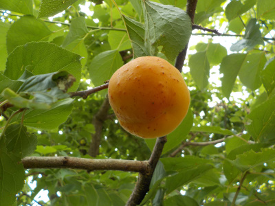
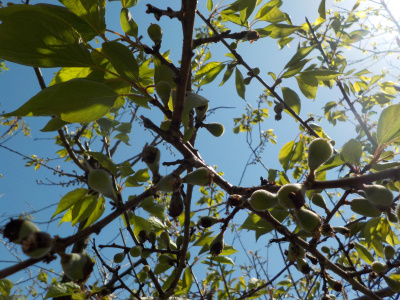
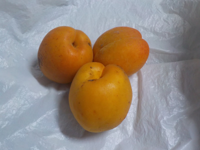
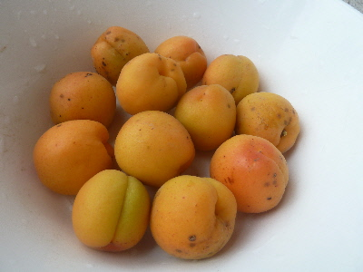
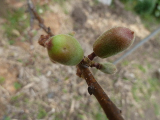

アンズがオレンジ色に近づいてきました。
更新日 : 2022/06/11

もう食べれそうな気がしますが、まだちょっと青いかな。
もうちょっと待ちます。
更新日 : 2022/06/11

もう食べれそうな気がしますが、まだちょっと青いかな。
もうちょっと待ちます。
更新日 : 2022/04/17

ほとんどが途中で落ちるとは思いますが、沢山実が出来ているのを見るのは気分がいいです。
更新日 : 2021/06/13

数が少ないので生で食べました。
あっさりとした甘さですが、アンズらしい味がして美味しかったです。
更新日 : 2018/06/10

杏が色づいていたので収穫しました。
ちょっと青いのもありますね。ちょっと熟れさせてからコンポートにして食べます。
更新日 : 2014/04/19

ちょっと前に花が咲いたと思っていたんですが、もう実が出来ていました。
早いですね。他の果樹よりとっても早い気がします。
アンズはコンポートで食べたい。